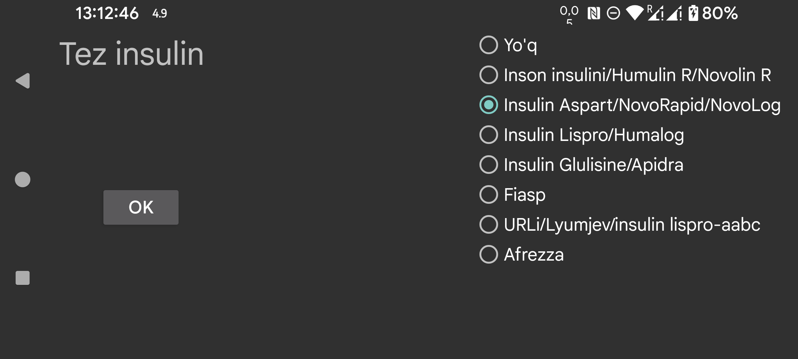

ar de es hi it ja ko nl ru tr uk uz en
IOB - bu oldingi insulin dozalari ta'siridan qancha insulin qolganini bildiruvchi ko'rsatkich. Juggluco 9.2.0 dan oldin IOB ni taxmin qilish uchun Insulin Aspartning qondagi insulin konsentratsiyasi egri chizig'idan foydalanilgan. Endi siz insulin turini ko'rsatishingiz mumkin va Juggluco shu turga xos qondagi insulin konsentratsiyasi egri chizig'idan foydalanadi. Belgilang Yo'q agar yorliq tez ta'sir qiluvchi insulinni bildirmasa, aks holda insulin turini ko'rsating. Variantlar quyidagilar:
Inson insulini/Humulin R/Novolin R
Insulin Aspart/NovoRapid/NovoLog
Insulin Lispro/Humalog
Insulin Glulisine/Apidra
Fiasp
URLi
Afrezza
IOB formulalari qanday aniqlanishi quyidagi veb-sahifada tasvirlangan: https://www.juggluco.nl/Juggluco/IOB/overview.html
Agar bu yerda tilga olinmagan tez ta'sir qiluvchi insulin turini bilsangiz, menga e-mail yuborishingiz mumkin.